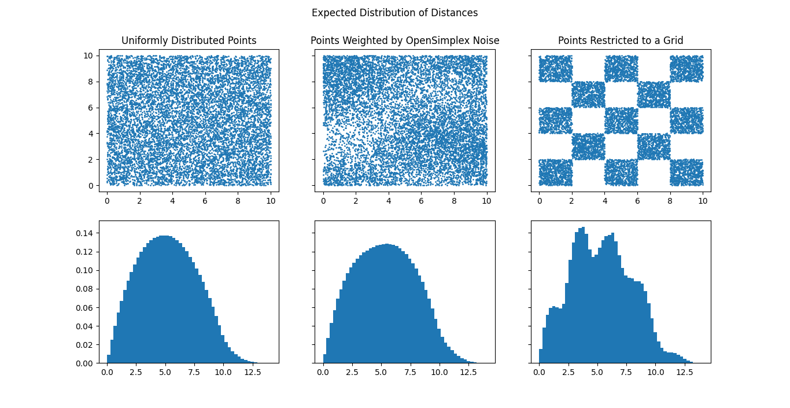

This time I remembered to make the layout, but I forgot to get any of the media needed for my project page. So I just have short descriptions for now.
Battleship - Python
My first large project, completed in my senior year of high school, this is an implimentation of the classic board game "Battleship" in python. The game runs entirely in the python console, with the player inputting their shot coordinates as commands, and the game state is displayed using ascii characters.
Distance Distrobutions - Python
During my undergraduate research, my professor suggested this as a small project to familiarize myself with the Matplotlib library, which I would need to be familiar with going forward. It's meant as a demonstration of how you can use the the distance between objects as a way of finding the distrobustion of those objects through a space.
Snake - Python
My second game in python, this time I decided to use a graphical library, PyGame, to make the classic computer game Snake.
Galaxy Classification - Python
This is most of what I did during my undergraduate research. Our plan was to take the new images of very distant galaxies taken by the JWST, and classify them into the different categories of galaxy (spiral, elliptical, irregular, etc.) to see if we could find any insights about early galactic formation. My job in this task was to take the reduced images taken by JWST, which were in the standard ".fits" format used throughout astronomy, and turn them into .png files. Then, we took those files and uploaded them to Zooniverse, a citizen science platform, where users around the world could help us classify the galaxies.